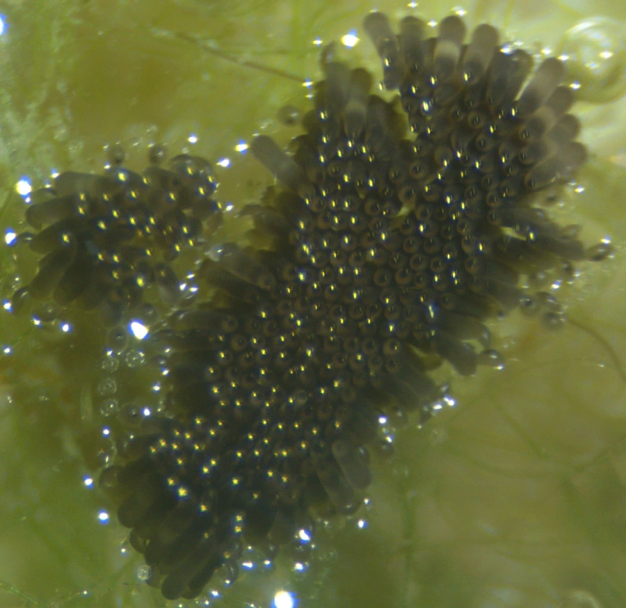

昆虫 · 动物界
淡色库蚊 Culex pipiens

城市最常见的灰褐色蚊类，夜间活动，幼虫孳生于污水和容器积水中，是丝虫病与乙脑的传播媒介。
- 分类
- 门节肢动物门纲昆虫纲目双翅目科蚊科属库蚊属
- 栖息环境
- 人居室内外、下水道、污水坑与容器积水
- 地理分布
- 东亚，中国除高寒地区外各地均有分布
- 保护级别
- 常见卫生害虫，无保护需求
物种志
淡色库蚊的成虫体长约五毫米，体色淡褐至灰褐，胸背没有明显白斑，腹部各节基部有淡色横带，喙细长，停歇时身体与停面几乎平行。幼虫头部有明显的口刷，尾端有呼吸管，常倒挂在水面下。卵块呈舟形浮在水面，一个卵块可有上百粒卵，孵化后幼虫在水中取食有机碎屑。
它分布于东亚，中国除高寒地区外几乎各地都有，是城市和乡村最常见的蚊种之一。雌蚊在夜间和黄昏活动，喜在人居环境吸血，白天躲在阴暗的室内、地下室和草丛中。幼虫孳生于污水坑、下水道、花盆和废旧容器积水中，一年可繁殖多代。它能传播班氏丝虫病和流行性乙型脑炎，骚扰性很强。防治以清除积水和投放灭蚊幼剂为主。
形态与习性
- 体长约五毫米，体色淡褐至灰褐
- 停歇姿态身体与停面几乎平行
- 卵块舟形浮于水面，可含上百粒卵
- 孳生污水坑、下水道与容器积水
- 传播班氏丝虫病、流行性乙型脑炎
- 防治清除积水，投放灭蚊幼剂
趣味知识
- 它停在墙上时身体几乎与墙面平行，按蚊则是斜着翘起尾巴。
- 一个舟形卵块里能装上百粒卵，几天后就是一盆孑孓。
- 花盆托盘、废旧轮胎里的一小汪水，就够它完成一代繁殖。
生态关系
- 捕食 ← 碧伟蜓 蜻蜓捕食蚊虫